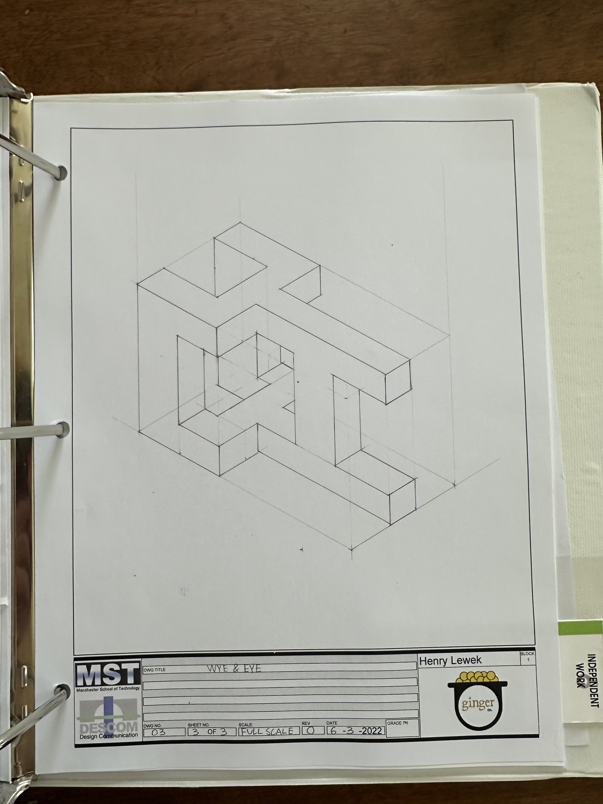

First Year Binder
This was the beginning of my time in the Design Communication program. This folder contains a ton of the work that I did over the year.
Notes
One of the things we did was take very good notes. There was a ton to learn about, ranging from what the design process really is, to different types of design.
Photoshop
One of the things we did was take very good notes. There was a ton to learn about, ranging from what the design process really is, to different types of design.
Sketches
One of the things we did was take very good notes. There was a ton to learn about, ranging from what the design process really is, to different types of design.
Drafting
A main focus during the first year class was set on honing our drafting skills. We practiced using many different techniques, as well as getting to know the tools needed to draft. Overall, I learnt it quickly and it was very easy to do at the end.
Visualizing Objects
A part of the design process is the ability to take any real object in the world, and be able to import it digitally. One of my projects was to get an object and measure it precisly, then import it into AutoCAD.